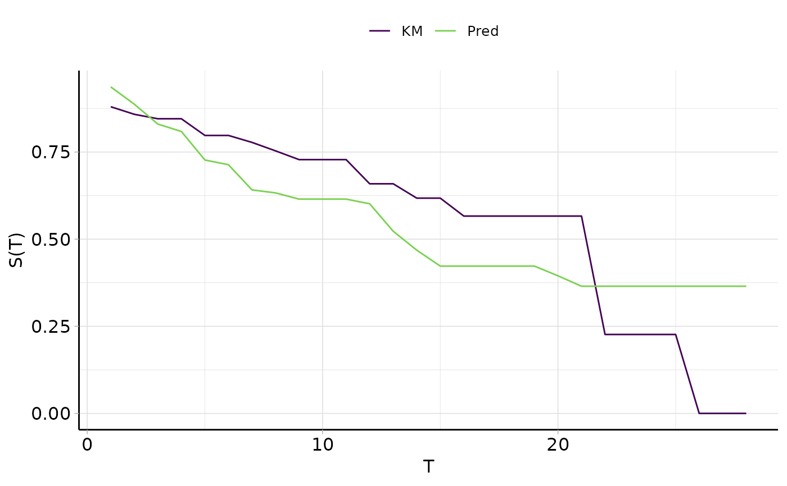
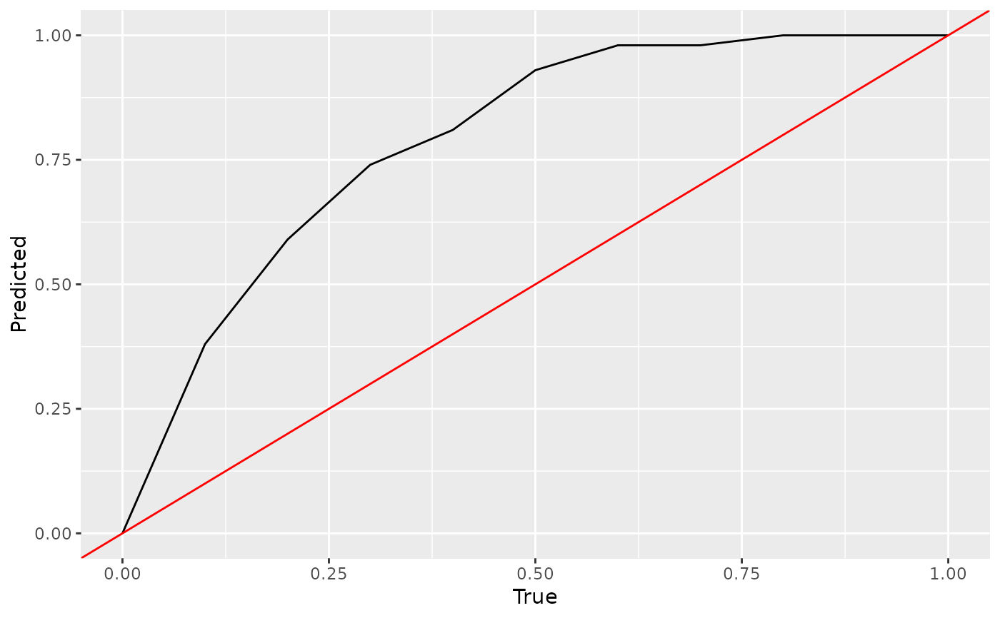

Generates plots for mlr3proba::PredictionSurv, depending on argument type:
"calib"(default): Calibration plot comparing the average predicted survival distribution to a Kaplan-Meier prediction, this is not a comparison of a stratifiedcrankorlpprediction.objectmust havedistrprediction.geom_line()is used for comparison split between the prediction (Pred) and Kaplan-Meier estimate (KM). In addition labels are added for the x (T) and y (S(T)) axes."dcalib": Distribution calibration plot. A model is D-calibrated if X% of deaths occur before the X/100 quantile of the predicted distribution, e.g. if 50% of observations die before their predicted median survival time. A model is D-calibrated if the resulting plot lies on x = y.
# S3 method for PredictionSurv autoplot( object, type = c("calib", "dcalib"), task = NULL, row_ids = NULL, times = NULL, xyline = TRUE, cuts = 11L, ... )
Arguments
| object | |
|---|---|
| type | (character(1)): |
| task | (mlr3proba::TaskSurv) |
| row_ids | ( |
| times | ( |
| xyline | ( |
| cuts | ( |
| ... | ( |
References
Haider H, Hoehn B, Davis S, Greiner R (2020). “Effective Ways to Build and Evaluate Individual Survival Distributions.” Journal of Machine Learning Research, 21(85), 1-63. https://jmlr.org/papers/v21/18-772.html.
Examples
library(mlr3) library(mlr3proba) library(mlr3viz) learn = lrn("surv.coxph") task = tsk("unemployment") p = learn$train(task, row_ids = 1:300)$predict(task, row_ids = 301:400) # calibration by comparison of average prediction to Kaplan-Meier autoplot(p, type = "calib", task = task, row_ids = 301:400)